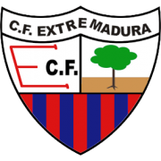
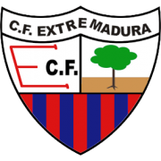

Fue un club de fútbol español fundado en 1940 y que desapareció en 2009 debido a problemas financieros.
El club fue refundado en 1916 después de que su predecesor, el Alfonso XIII FC, fuera disuelto. El club se convirtió en uno de los equipos más exitosos de la década de 1990 y principios de la de 2000, pero tuvo problemas financieros y descendió a la Segunda División en varias ocasiones.
El Racing de Santander es un club de fútbol fundado en 1913 que ha sufrido altibajos en su historia. En 2014, el club se declaró en bancarrota y fue refundado como Real Racing Club de Santander.
El Real Oviedo es un club de fútbol fundado en 1926 que ha sufrido varios problemas financieros a lo largo de su historia. En 2003, el club fue refundado después de declararse en bancarrota.
Fue un club de fútbol fundado en 1912 y que desapareció en 2013 debido a problemas financieros.
Fue un club de fútbol fundado en 1913 y que desapareció en 1956 después de que Tetuán fuera anexionado por Marruecos.
Fue un club de fútbol fundado en 1939 y que desapareció en 2010 debido a problemas financieros.
Fue fundado en 1922 y ha sufrido varios problemas financieros en su historia. En 2011, el club se declaró en bancarrota y fue refundado como Castellón CD.
Fue un club de fútbol fundado en 1907 y que desapareció en 2015 debido a problemas financieros.
Es un club de fútbol fundado en 1908 que ha sufrido varios problemas financieros a lo largo de su historia. En 2014, el club se declaró en bancarrota y fue refundado como Real Murcia Imperial.
Fue un club de fútbol fundado en 1947 y que desapareció en 2013 debido a problemas financieros, fue refundado como Xerez CD.
Fue un club de fútbol fundado en 1924 que desapareció en 2010 debido a problemas financieros, refundado como Extremadura, aunque el año pasado se volvió a extinguir.
Fue un club de fútbol fundado en 1923 que desapareció en 2013 debido a problemas financieros.
Fue un club de fútbol fundado en 1939 que desapareció en 2011 debido a problemas financieros.
Fue un club de fútbol fundado en 1919 que desapareció en 2014 debido a problemas financieros.
Fue un club de fútbol fundado en 1909 que desapareció en 1928 debido a problemas financieros.
Fue un club de fútbol fundado en 1974 que desapareció en 2011 debido a problemas financieros.
Es un club de fútbol fundado en 1940 que ha sufrido varios problemas financieros en su historia. En 2004, el club se declaró en bancarrota y fue refundado como SD Eibar.
Fue un club de fútbol fundado en 1903 que desapareció en 2015 debido a problemas financieros.
Es un club de fútbol fundado en 1920 que ha sufrido varios problemas financieros en su historia. En 2014, el club se declaró en bancarrota y fue refundado como Club Atlético Osasuna Fundación.
Fue un club de fútbol fundado en 1928 que desapareció en 2020 debido a problemas financieros.
Es un club de fútbol fundado en 1905 que ha sufrido varios problemas financieros en su historia. En 2012, el club se declaró en bancarrota y fue refundado como CD Badajoz.
Es un club de fútbol fundado en 1907 que ha sufrido varios problemas financieros en su historia. En 1932, el club se declaró en bancarrota y fue refundado como Real Betis Balompié, SAD.
Es un club de fútbol fundado en 1928 que ha sufrido varios problemas financieros en su historia. En 1989, el club se declaró en bancarrota y fue refundado como CD Leganés.